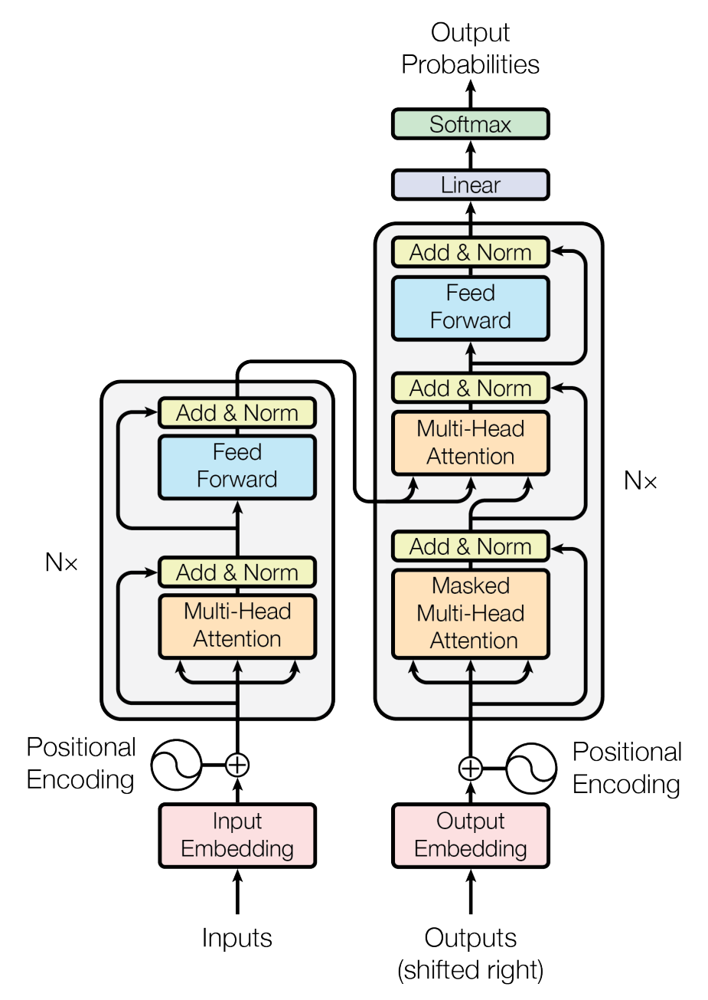
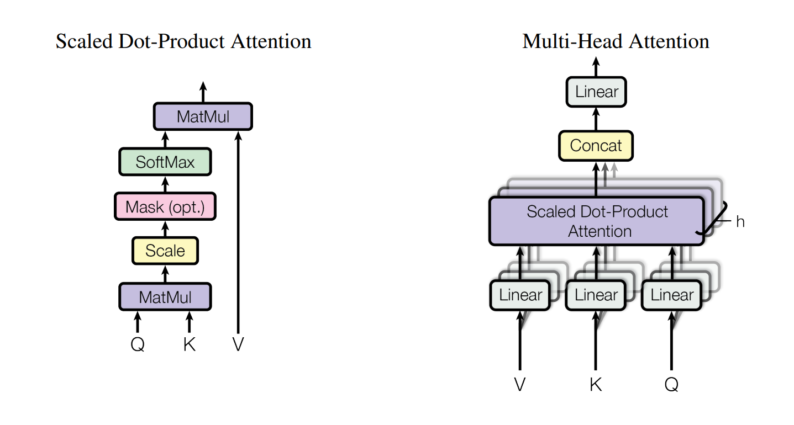

transformer
结构
Encoder/Decoder
单个 encoder/decoder 结构:

一共有 \(6\) 层这样相同的结构, 组成整个 transformer
左边是 encoder, 右边是 decoder
-
encoder 有两个子层, 每层的输出为 \(LayerNorm(x+SubLayer(x))\), 其中 \(x\) 为输入, \(SubLayer(x)\) 是这一子层的函数
输出的维数 \(d_{model}=512\)
-
decoder 有三个子层, 中间一层将 encoder 的输出作为多头注意力的 \(K, V\) 输入, 将上一子层的输出作为 \(Q\) 输入
同时第一层加入了掩码, 使位置 \(i\) 的预测只依赖于 \(i\) 之前的输出, 而不会注意到后面的输出
Attention

三个输入 \(Q,K,V\)
\(Q\) 是查询 (queries), \(K,V\) 时键值对 (keys and values)
-
Scaled Dot-Product Attention
假设 \(Q,K\) 维数为 \(d_k\), \(V\) 维数为 \(d_v\)
输出表示为 \(\displaystyle Attention(Q,K,V) = softmax(\frac{QK^T}{\sqrt{d_k}})V\)
-
对于注意力的选择
有两种主流注意力: Additive 和 Dot-Product
一般来说, 点积可以矩阵优化, 所以比加法的快
但是当 \(d_k\) 很大时, 点积会造成梯度趋近于 \(0\), 导致效果变差
乘上 \(\frac1{\sqrt{d_k}}\) 规范化系数可以避免这个问题
-
注意力的 \(Q,K,V\) 意义? \(Q\) 与所有 \(K\) 计算相似度 (点积), 得出的是对应 \(V\) 的权重; 之后将 \(V\) 加权求和输出
所以 \(Q\) 是输入信息, 也就是查询, \(K,V\) 是输入信息与对应的输出组成的键值对, 是位置表示以及对应的答案
\(Q,K\) 一般来自于相同的输入
在自注意力中, \(V\) 也来自于相同输入, 这样可以注意到句子中各个单词的依赖关系
-
复杂度: \(Q,K\in\mathbb{R^{n\times d_k}}\), \(V\in\mathbb{R^{n\times d_v}},Attention(Q,K,V)\in\mathbb{R^{n\times d_v}}\)
\(Q\times K^T\) 复杂度为 \(O(n\cdot d_k\cdot n)=O(n^2d)\)
\(softmax(\frac{QK^T}{\sqrt{d_k}})V\) 复杂度为 \(O(n\cdot n\cdot d_v)=O(n^2d)\)
所以复杂度为 \(O(n^2d)\)
-
如果改成 restricted, 每个元素只能和周围 \(r\) 个元素计算依赖, 即 \(K\in\mathbb{R^{r\times d_k}},V\in\mathbb{R^{r\times d_v}}\)
所以复杂度为 \(O(n\cdot d_k\cdot r+n\cdot r\cdot d_v)=O(rnd)\)
-
-
Multi-Head Attention
先把 \(Q,K,V\) 线性映射成不同的 \(h\) 组 \(d_k,d_k,d_v\) 维向量
然后并列 \(h\) 个 Scaled Dot-Product Attention
输出表示为 \(\displaystyle MultiHead(Q,K,V)=Concat(head_1,\cdots,head_h)W^O\)
\(head_i=Attention(QW_i^Q, KW_i^K,VW_i^V)\)
其中 \(W_i^Q\in\mathbb{R}^{d_{model}\times d_k}, W_i^K\in\mathbb{R}^{d_{model}\times d_k}, W_i^V\in\mathbb{R}^{d_{model}\times d_v}, W^O\in\mathbb{R}^{hd_v\times d_{model}}\) 都是系数矩阵, 上标不是乘方, 只是表示方法
一般取 \(h=8,d_k=d_v=d_{model}/h=64\)
- 为什么设计成多头注意力? 一方面是为了从不同角度/子空间思考, 注意到不同语义和句法; 同时可以并行计算
-
复杂度: 这里的 \(Q,K,V\in\mathbb{R^{n\times d_{model}}}\), 因为是其他层的输出
\(head_i\) 计算是 \(O(n^2d+nd_{model}d_k+nd_{model}d_v)=O(n^2d+nd^2)\)
并且 \(head_i\in\mathbb{R^{n\times d_v}}\)
最终计算 \(W^O\) 的复杂度是 \(O(n\cdot hd_v\cdot d_{model}) = O(nd^2)\)
所以复杂度为 \(O(n^2d+nd^2)\)
-
如果改成 restricted, 那么 \(K,V\in\mathbb{R^{r\times d_{model}}}\)
\(head_i\) 计算复杂度为 \(O(rnd+rd_{model}d_k+rd_{model}d_v+nd_{model}d_k)=O(rnd+rd^2+nd^2)\)
\(W^O\) 计算复杂度为 \(nd^2\)
所以总的复杂度是 \(O(rnd+nd^2)\)
Position-wise Feed-Forward Networks
全连接层, 函数是两个线性变换的叠加: \(FFN(x)=\max(0,xW_1+b_1)W_2+b_2\)
层与层之间的参数各不相同
- 这样的线性变换有什么意义?
Embeddings and Softmax
embedding 将单词转换成维数为 \(d_{model}\) 的向量
Positional Encoding
transformer 结构中没有 RNN, CNN
为了加入一些单词之间的位置信息, 加入了两个函数:
\(\displaystyle PE(pos,2i)=\sin(pos/10000^{2i/d_{model}})\)
\(\displaystyle PE(pos,2i+1)=\cos(pos/10000^{2i/d_{model}})\)
\(pos\) 是位置, \(i\) 是维数
这样输入的每一维对应着一个三角函数
由于三角函数的性质, 对于任意 \(k\), 都可以将 \(PE_{pos+k}\) 表示成 \(PE_{pos}\) 的线性函数
- 线性性的好处具体体现? 这可能使学习相对位置信息更简单; 同时它允许接受比训练时的最大句子长度更长的输入句子
对比 RNN, CNN
| Layer Type | Complexity per Layer | Sequential Operations | Maximum Path Length |
|---|---|---|---|
| Self-Attention | \(O(n^2d)\) | \(O(1)\) | \(O(1)\) |
| Recurrent | \(O(nd^2)\) | \(O(n)\) | \(O(n)\) |
| Convolutional | \(O(knd^2)\) | \(O(1)\) | \(O(\log_kn)\) |
| Self-Attention(restricted) | \(O(rnd)\) | \(O(1)\) | \(O(n/r)\) |
序列长度为 \(n\), 向量维数为 \(d\), CNN 的卷积核大小为 \(k\), 限制自注意力的块大小为 \(r\)
并行计算
复杂度是 \(\displaystyle O(\frac{W}{p}+D)\)
主要关注三点:
复杂度
每层计算的复杂度
-
对于 RNN, 可以用最经典的计算公式 \(h_t=f(Ux_t+Wh_{t-1})\) 来看复杂度
\(x_t\) 是 \(t\) 时刻输入, 维数是 \(d\times 1\)
\(h_{t-1}\) 是上一个隐藏层, 维数是 \(d\times 1\)
\(U, W\) 是参数矩阵, 维数是 \(d\times d\)
所以单次迭代复杂度是 \(O(d^2)\), 这一层处理整个序列复杂度 \(O(nd^2)\)
-
对于 CNN, 输入/输出通道维数都是 \(d\)
那么 \(n\) 个单词组成了 \(n\times d\) 的输入数据
一个卷积核维数是 \(k\times d\), \(k\) 是卷积核的宽度, 也是时间步, 意义是跨越 \(k\) 个单词, 从而学习单词间的局部依赖
所以单次计算卷积的复杂度是 \(O(kd)\)
而计算出的值是一个实数, 对应着某个输出通道的值
要想计算所有输出通道的值, 就需要 \(d\) 个这样的卷积核, 计算复杂度是 \(O(d\cdot kd)\)
所以实际整个卷积核的维数是 \(k\times d\times d\) 的
那么计算整个序列, 复杂度是 \(O(knd^2)\)
-
对于 transformer, 如果只考虑 Self-Attention 的计算部分, 那么复杂度是 \(O(n^2d)\) 的 (即忽略了线性映射的 \(O(nd^2)\))
-
为什么可以忽略线性映射部分?
-
-
相当于并行计算的 \(\displaystyle \frac{W}{p}\), 即每一组的 workload
可并行计算的工作量
哪个层结构的序列操作数量最少
长距离依赖的学习效率
哪个层结构的最大路径长度最少
最大路径是指前向/后向传播途径的路径
网络中的路径长度决定了词与词之间长距离依赖的学习效率
所以最大路径长度越短, 学习依赖越简单 (效率越高)
- 相当于并行计算的 \(D\), 即 depth
综合对比一下
-
对于计算的复杂度, RNN 的 \(O(nd^2)\) 要优于普通 CNN 的 \(O(knd^2)\), \(k\) 是卷积核 (kernel) 的大小, \(k<n\)
同时, 在 \(n<d\) 时普通的自注意力优于 RNN
为了提升长序列的表现, 可以将输入序列分组, 每组长为 \(r\), 分成 \(n/r\) 组. 这样的限制自注意力比 RNN 的序列操作更少; 尽管这会提升最大路径长度, 但仍然好于 RNN \(O(n)\) 的最大路径长度
如果 \(r<d\), 那么这样的自注意力就会好于 RNN
-
对于 Separable convolutions, 复杂度达到了 \(O(knd+nd^2)\), 但仍然不比 \(r<d\) 的限制自注意力的 \(O(rnd)\) 好
- 对于最大路径长度, 如何比较 \(O(n/k)\) 与 \(O(n/r)\), 或者比较 \(O(\log_kn)\) 与 \(O(n/r)\)?
-
上面说了 restricted Self-Attention 还有一个 \(O(nd^2)\) 的线性映射部分, 同时 \(FFN\) 也为 \(O(nd^2)\); 不过就算加上这两部分, 复杂度是 \(O(rnd+nd^2)\), 在 \(r<d\) 时, 这个复杂度与 RNN 的 \(O(nd^2)\) 和 CNN 的 \(O(knd+nd^2)\) 基本等价
并且注意力可以更好地学习到长程依赖, 还比 RNN 具有更好的可并行性
-
还有一个 interpretability 的好处, 不太懂
大概是说可以理解更多语义和句法
原文 有更详细描述